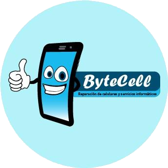

Información
- 06.09.1991
- San Andres de Giles
- +5492325593915
- Bytecell.sys@gmail.com
- http://bytecell.com.ar
Habilidades Lenguajes
- Español
- Nativo
- Ingles
- B2
Habilidades informaticas
-
Java
4
-
Delphi
5
-
React
1
-
Python
1
-
Postgresql
3
-
Mysql
2
-
Firebird
4
Experiencia de Trabajo
-
Diciembre 2018
actualidad
-

Reparacion de smartphones, tablet y mantenimiento de sistemas informáticos. Bytecell
-
Noviembre 2019
actualidad

Instalación y configuración de cámaras de seguridad y mantenimiento informático general en Vivian Hotel Boutique.
Educación
-
Diciembre 2009
actualidad
Licenciatura en sistemas de información. Universidad de Lujan
-
Marzo 2006
Diciembre 2009
Bachiller con orientación en Ciencias Exactas y Naturales. Escuela Normal Superior Fray Mamerto Esquiú
-
Agosto 2019
Diciembre 2019
Curso de reparacion programación y reparación de celulares multimarcas. Universidad de las Flores
-
Enero 2020
Febrero 2020
Curso microelectrónica y reballing especializado en Iphone
Experiencia didácticas
Ninguna